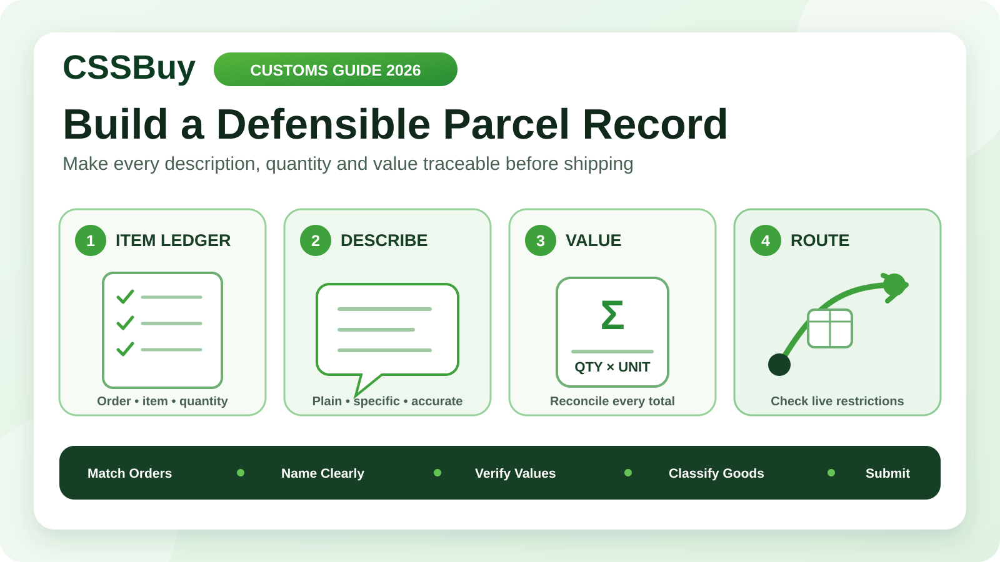

CSSBuy Customs Declaration Guide 2026: Build a Defensible Parcel Record
A customs declaration should not be invented during the final minute of parcel submission. By then, several seller orders may have been consolidated, retail packaging may have been removed, and similar products may be difficult to match with their original prices. The information customs needs begins much earlier, when each item is purchased.
CSSBuy’s current Buy For Me process separates the purchase from international delivery. The buyer first pays for goods and Chinese domestic delivery. After warehouse inspection and storage, the buyer selects items, chooses an available shipping method and pays an international shipping deposit and customs fee. CSSBuy says that deposit is based on estimated weight, route and destination, while the final shipping charge follows the size and weight verified by the logistics company.
This guide turns that workflow into a defensible parcel record. It is not tax or legal advice, and it does not promise clearance. Its purpose is to keep descriptions, quantities and values accurate enough to be checked against the order history.
Treat the declaration as a summary of evidence
A good declaration is the short output of a longer record. It should agree with what was bought, what reached the warehouse and what was packed. If it cannot be traced back to those stages, it is only a guess.
Create a parcel ledger with one row per item type. Record the CSSBuy order reference, seller description, plain-language product name, material or function when relevant, quantity, unit purchase value and extended value. Add the warehouse weight and product attribute if the account displays them. Preserve screenshots or invoices in your own files, because listings and seller prices can change.
The ledger does not need to look official. It needs to reconcile. Someone reviewing it should be able to move from a parcel line to the exact order that supports it.
Write names for identification, not marketing
Seller titles often contain keywords, model language, promotional claims and abbreviations that make poor customs descriptions. Replace them with a neutral name that says what the object is. “Men’s cotton hooded sweatshirt” is more useful than a campaign title. “Plastic phone case” is clearer than a seller’s internal product code.
Do not use vague labels such as gift, sample, accessory or miscellaneous when a more accurate description is available. Also avoid turning every detail into a sentence. A description normally needs the item type plus one or two facts that distinguish its material, use or construction.
Use the same naming rule across the parcel. If two order lines are genuinely the same product type and value basis, they may be grouped. If their materials, functions or values differ, keep them separate so the total remains explainable.
Record value at the moment of purchase
Value becomes confusing when coupons, seller freight, agent charges and currency conversion are mixed together. Start with the amount actually attributable to the goods and keep the supporting transaction record. Record discounts as they were truly applied rather than copying a crossed-out retail price or a seller’s highest reference price.
Keep Chinese domestic shipping in a separate column. It is part of the first CSSBuy payment, but separating it prevents the merchandise calculation from changing whenever several items share one seller freight charge. Keep service charges and international freight separate as well. Your destination’s rules determine how different costs may be treated, so verify current requirements with the relevant customs authority.
Never choose a number merely because it looks less likely to attract tax. An unsupported low value can create a mismatch with invoices, payment records or insurance evidence. Accuracy is a stronger strategy than trying to predict an examiner’s reaction.
Reconcile quantity before consolidation
A declaration total can be mathematically correct while the quantities are wrong. Before submitting the parcel, compare the selected warehouse items with the ledger row by row. Count pairs as the product is normally sold and described. Count sets consistently, and state the set type when that prevents confusion.
For duplicate products, multiply the unit value by the shipped quantity and verify the extended value. For mixed variants, confirm that the total quantity equals the number selected from storage. Packaging removal does not erase an item from the record; it only changes the physical parcel.
If the warehouse view shows a different quantity or model than expected, resolve that discrepancy before international submission. Customs data should describe the box that will ship, not the box you originally imagined.
Classify product attributes before choosing a route
CSSBuy’s shipping calculator currently asks for commodity attributes such as ordinary goods, electronics, liquids, knives, powders, shoes, bags, food, batteries, cosmetics, magnetic items, watches and perfume. The official calculator explains that designer products, liquids, powders and batteries can be restricted on selected methods.
That makes classification a routing decision as well as a documentation task. A product with a built-in battery should not be treated as ordinary goods merely because the battery is small. A cosmetic remains a cosmetic when packed beside clothing. The parcel inherits the restrictions of its contents.
Check each warehouse item’s displayed attribute and compare it with what the product actually is. When a classification seems incomplete, ask CSSBuy through the relevant order or parcel channel before paying for international delivery. Do not rely on a route appearing once in an estimate as proof that it will accept every final item.
Choose parcel composition deliberately
Consolidation saves handling and may improve shipping efficiency, but it also combines values, classifications and evidence into one customs event. Before selecting every stored item, test whether the group is coherent.
A practical parcel has descriptions you can summarize accurately, compatible route attributes and a total value you can document. Splitting may be sensible when one sensitive item removes otherwise suitable shipping methods, when a fragile product needs different protection, or when the combined record becomes difficult to reconcile.
Keep shipping weight separate from declared value
Weight and value answer different questions. CSSBuy’s current calculator distinguishes actual weight from volumetric weight and says many freight lines charge whichever is greater, using a route-specific divisor. CSSBuy also says the international deposit is estimated before the logistics company verifies final package dimensions and weight.
Those calculations affect freight; they do not provide a value for the goods. Removing shoe boxes may lower volume without changing what the shoes cost. Reinforcement may raise chargeable weight without raising merchandise value. Keep the two records separate so a packing decision cannot accidentally rewrite the commercial record.
Save the submitted parcel estimate and the final measurement when it appears. The difference can explain a shipping adjustment without changing the item ledger.
Verify the delivery identity
Accurate contents sent to an inaccurate recipient still create a serious problem. Copy the recipient name and address from a reliable local format, then review country, region, city, postal code, street details and phone number as separate fields. Do not assume an address autocomplete result is complete.
The name should be consistent with what the destination’s carrier and customs process require. Transliteration, apartment placement and tax identifiers vary by country, so follow current local instructions rather than a generic example. If a route requests an additional identifier, confirm its purpose and formatting before submission.
Read the address once from top to bottom and once from bottom to top. The second pass is surprisingly good at exposing a missing apartment, duplicated city or transposed postal digit.
Read route terms as live terms
Names such as tax-included, duty-paid or tariffless can encourage assumptions. Do not infer coverage from a label alone. Read the current line description shown for your destination, including accepted goods, weight and size limits, compensation or insurance terms, tax handling and any declaration instructions.
Routes change. A method that accepted a product last month may not be available for the current parcel. CSSBuy’s calculator displays line characteristics and update information, but the selectable options at parcel submission reflect the specific combination of destination and stored goods.
If a tax or customs term is unclear, obtain clarification before payment and keep the answer with your parcel record. A route choice is not a substitute for accurate item information.
Build a compact evidence pack
Keep one folder for the shipment. Include the order ledger, purchase confirmations, warehouse item list, relevant QC images, parcel submission summary, value calculation, selected route terms and final tracking record. Name files with the order or parcel reference rather than generic labels such as screenshot one.
The goal is not to send all of this automatically. It is to be ready if CSSBuy, the carrier or customs requests clarification. A small indexed record is easier to use than dozens of unrelated screenshots.
After dispatch, CSSBuy’s current workflow places tracking in User Center under My Parcel and directs parcel questions to the relevant parcel’s Add Note function. Keep any question tied to that record, state the exact issue and answer with consistent data from the ledger.
Run the five-way consistency test
Immediately before payment, compare five views: the original orders, warehouse selections, declaration lines, shipping attributes and delivery identity. Product names should describe the selected goods. Quantities should match storage selections. Values should total correctly. Attributes should explain the available routes. The recipient data should satisfy the destination format.
Then calculate the declaration total independently a second time. Check the currency, decimal placement and unit-versus-line totals. A ten-unit row entered with the single-unit value as its total is an easy error to miss.
Stop when a field cannot be supported. Use the relevant CSSBuy note channel to clarify it before the parcel is released. A delayed submission is usually easier to correct than conflicting information after dispatch.
The twelve-minute declaration workflow
Minute one: open the warehouse selection and ledger. Minutes two to four: match every item, quantity and neutral description. Minutes five and six: verify unit values, discounts and the arithmetic total. Minutes seven and eight: confirm product attributes and current route eligibility. Minutes nine and ten: review the complete recipient identity. Minute eleven: save the submission summary. Minute twelve: perform the five-way consistency test.
This short review works only because the records were created during purchasing and warehouse inspection. If you start from nothing at parcel submission, pause and reconstruct the evidence instead of filling fields from memory.
CSSBuy provides the operational path from Chinese purchase to warehouse, consolidation and international delivery. Customs decisions and destination rules remain outside that path, and CSSBuy explicitly warns that international parcels can face taxes, delays, confiscation, damage or loss. No wording trick can guarantee clearance. A defensible declaration does something more realistic: it gives every description, quantity and value a traceable source, keeps the selected route aligned with the actual goods, and leaves you prepared to answer a factual question about the parcel.